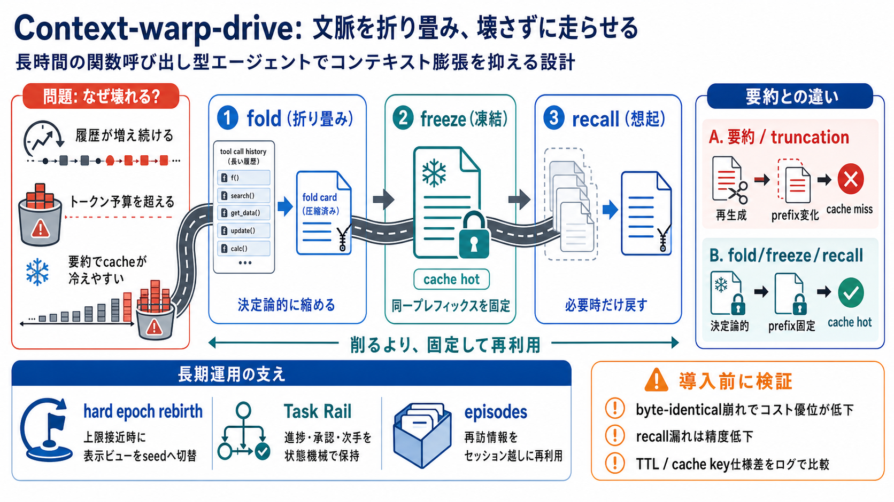

GitHub - dogtorjonah/context-warp-drive · GitHub
# dogtorjonah/context-warp-drive. **Stop summarizing your agent's memory.** Every compaction call burns a model round-tr…

履歴が長期化すると、モデルに入る入力が膨張する（超過＝継続不能）。
要約や切り詰めはプレフィックスを作り直しやすく、プロンプトキャッシュが効きにくくなる。
決定論的アルゴリズムで、長い履歴をコンパクトな折り畳みビューへ。
折り畳み結果を固定し、以降のターンでプレフィックスを同一に保つ。
全部を1行化すると根拠や詳細が欠け、精度が落ちやすい。
「参照した瞬間に必要情報だけ」を追加して、精度低下を抑える。
生成・再構成が入る → プレフィックス変更 → cache hit率低下。
決定論的に折り畳み → freezeで固定 → recallで差し込み。
長い履歴（特にtool呼び出しの結果）を折り畳みビューへ。
折り畳み結果を固定し、以降のターンで同一プレフィックスにする。
再接触した情報だけをページイン（差し込み）して精度を維持。
「削る」より「固定して再利用」。精度はrecallで取り戻す。
「必要になったときだけ」表示ビューを切り替える。
リセット＝記憶喪失にしないため、根拠を別経路に残す。
ステップ進行の状態機械として、進捗・承認・次手などを保持。
セッションをまたいで再利用される単位として、再訪情報を効率化。
byte-identical prefixが保たれるほど、プロンプトキャッシュが再利用されやすい。
要約/再生成の回数が減れば、読み取り単価差とレイテンシが下がり得る。
要約は使わない（または置き換えのベンチマーク設定があるなら区別して読む）。
「概念」と「実験条件」を同一視しないのが安全。
system/tools/tailや差分要素の扱いでプレフィックスが変わる。
メッセージ形状の安定化（固定化）と、キャッシュキーに関わる揺れの排除。
recallカードの量や予算上限（TTL / max cards 等）で呼び戻せる範囲が変わる。
折り畳み境界・recallカード設計・エピソード参照のチューニングが必要。
同一ログ/同一ツール呼び出し頻度で、truncationや要約スタンドインと比較したときのキャッシュ挙動。
ログ検証で「自分の入力パターンでプレフィックスが安定するか」を確かめる。
fold（決定論的圧縮）→ freeze（同一プレフィックス）→ recall（必要時のみページイン）。
Task Rail（状態機械）とepisodes（エピソード記憶）で会話以外の負担を分離。
byte-identical 崩れ＝キャッシュ無効化の可能性。
厳密A/B不明なら、導入前に自分のログで検証。
# dogtorjonah/context-warp-drive. **Stop summarizing your agent's memory.** Every compaction call burns a model round-tr…
WarpDrive is the lightweight data library for web apps — universal, typed, reactive, and ready to scale.
May 7, 2026 - Reduces context-switching overhead (estimated 2-5 min saved per window switch) ... area:agentAgent workflo…
Yes, this is a patch release packed with goodies. We expect this to be the last patch release of the 5.3 cycle. This put…
August 7, 2025 - Warp is losing context completely at some point, without notice.